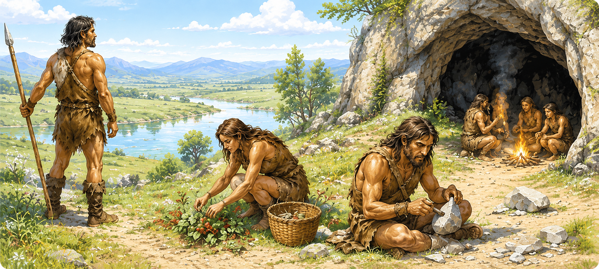
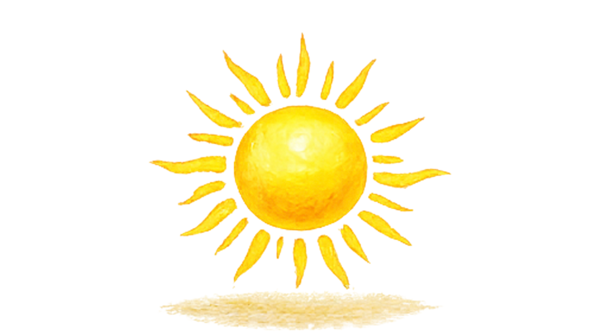
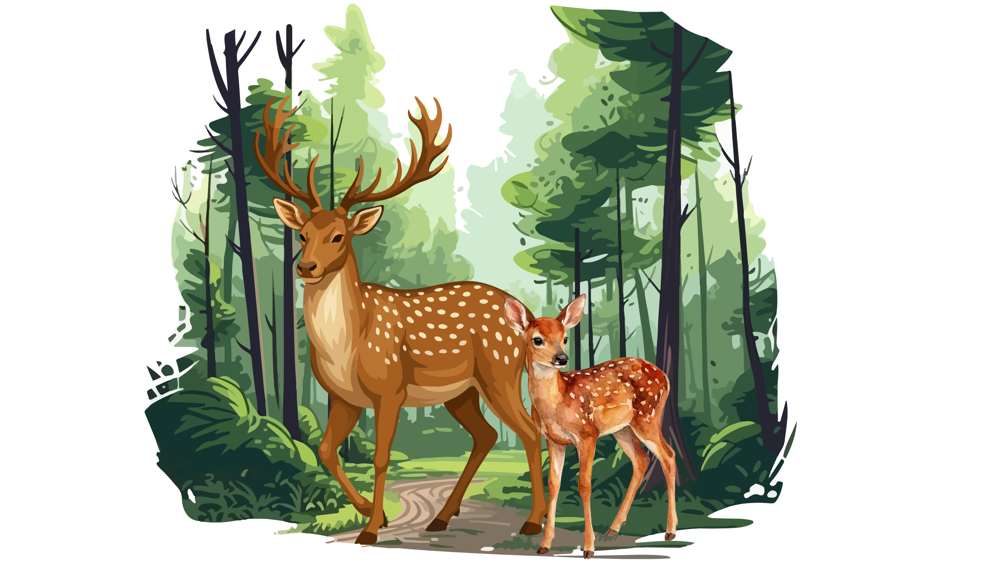
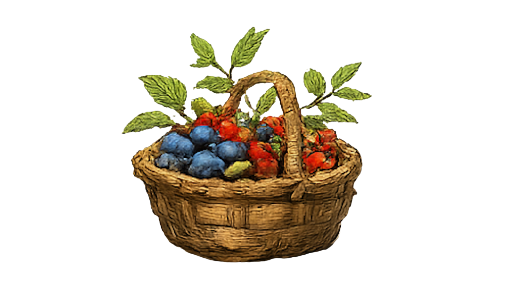

4. Jak żyli praludzie?
⚜
Myśliwi, zbieracze i wędrowcy
Praludzie nie znali rolnictwa ani hodowli zwierząt. Żyli z tego, co dawała im natura.
Wędrowali w poszukiwaniu pożywienia, schronienia i ciepła.
Dlaczego wędrowali?

Zmieniała się pogoda

Zwierzęta szukały nowych miejsc

Rośliny rosły tylko sezonowo

Szukali wody i bezpiecznych miejsc

Sowa Historyk
Praludzie byli sprytni i odważni. Dzięki swojej zaradności potrafili przetrwać w trudnych warunkach i przekazać życie swoim dzieciom.
➡ A teraz dowiesz się, dlaczego ludzie zaczęli uprawiać rośliny i hodować zwierzęta.